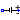
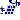
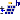
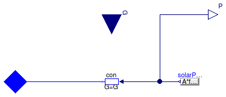
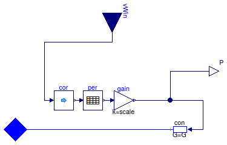
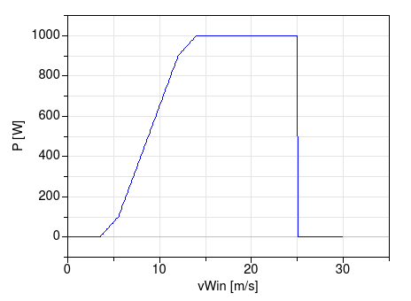

Package with models for DC sources
This package contains models that represent different types of DC sources.
Extends from Modelica.Icons.SourcesPackage (Icon for packages containing sources).
| Name | Description |
|---|---|
|  ConstantVoltage | Model of a constant DC voltage source |
|  PVSimple | Simple PV model |
|  PVSimpleOriented | Simple PV model with orientation |
| Model of a generoic DC voltage source | |
| Wind turbine with power output based on table as a function of wind speed | |
| Package with example models | |
| Package with base classes for DC sources |
 Buildings.Electrical.DC.Sources.ConstantVoltage
Buildings.Electrical.DC.Sources.ConstantVoltage
Model of a constant DC voltage source

This model represents a simple DC voltage source with constant voltage.
Extends from Buildings.Electrical.Interfaces.Source (Partial model of a generic source.).
| Type | Name | Default | Description |
|---|---|---|---|
| replaceable package PhaseSystem | OnePhase | Phase system | |
| Voltage | V | Value of constant voltage [V] | |
| Reference Parameters | |||
| Boolean | potentialReference | true | Serve as potential root |
| Boolean | definiteReference | false | Serve as definite root |
| Type | Name | Description |
|---|---|---|
| replaceable package PhaseSystem | Phase system | |
| NegativePin | n | Negative pin |
 Buildings.Electrical.DC.Sources.PVSimple
Buildings.Electrical.DC.Sources.PVSimple
Simple PV model

Model of a simple photovoltaic array.
This model computes the power as
P=A fact η G
where A is the panel area, fact is the fraction of the aperture area, η is the panel efficiency and G is the total solar irradiation. This power is equal to P = v i, where v is the voltage across the panel and i is the current that flows through the panel.
To avoid a large voltage drop the panel electric connector, it is recommended to use this model together with a model that prescribes the voltage. See Buildings.Electrical.DC.Sources.Examples.PVSimple.
Note: This model takes as input the total solar irradiation on the panel. This has to be computed converting the incoming radiation to take tilt and azimuth into account.
Extends from Buildings.Electrical.Interfaces.PartialPV (Base model for a PV system).
| Type | Name | Default | Description |
|---|---|---|---|
| Area | A | Net surface area [m2] | |
| Real | fAct | 0.9 | Fraction of surface area with active solar cells [1] |
| Real | eta | 0.12 | Module conversion efficiency [1] |
| replaceable package PhaseSystem | PartialPhaseSystem | Phase system | |
| Nominal conditions | |||
| Voltage | V_nominal | Nominal voltage (V_nominal >= 0) [V] | |
| Type | Name | Description |
|---|---|---|
| output RealOutput | P | Generated power [W] |
| replaceable package PhaseSystem | Phase system | |
| input RealInput | G | Total solar irradiation per unit area [W/m2] |
 Buildings.Electrical.DC.Sources.PVSimpleOriented
Buildings.Electrical.DC.Sources.PVSimpleOriented
Simple PV model with orientation

Model of a simple photovoltaic array.
This model computes the power as
P=A fact η G
where A is the panel area, fact is the fraction of the aperture area, η is the panel efficiency and G is the total solar irradiation, which is the sum of direct and diffuse irradiation. The model takes into account the location and the orientation of the PV panel, specified by the surface tilt, latitude and azimuth.
This power is equal to P = v i, where v is the voltage across the panel and i is the current that flows through the panel.
To avoid a large voltage drop the panel electric connector, it is recommended to use this model together with a model that prescribes the voltage. See Buildings.Electrical.DC.Sources.Examples.PVSimpleOriented.
This model takes as an input the direct and diffuse solar radiation from the weather data bus.
Extends from Buildings.Electrical.Interfaces.PartialPVOriented (Base model of a PV system with orientation).
| Type | Name | Default | Description |
|---|---|---|---|
| Area | A | Net surface area [m2] | |
| Real | fAct | 0.9 | Fraction of surface area with active solar cells [1] |
| Real | eta | 0.12 | Module conversion efficiency [1] |
| replaceable package PhaseSystem | PartialPhaseSystem | Phase system | |
| Orientation | |||
| Angle | til | Surface tilt [rad] | |
| Angle | lat | Latitude [rad] | |
| Angle | azi | Surface azimuth [rad] | |
| Nominal conditions | |||
| Voltage | V_nominal | Nominal voltage (V_nominal >= 0) [V] | |
| Type | Name | Description |
|---|---|---|
| output RealOutput | P | Generated power [W] |
| replaceable package PhaseSystem | Phase system | |
| Bus | weaBus | Weather data |
Model of a generoic DC voltage source

This model represents a simple DC voltage source with variable voltage.
Extends from Buildings.Electrical.Interfaces.VariableVoltageSource (Partial model of a generic variable voltage source.).
| Type | Name | Default | Description |
|---|---|---|---|
| replaceable package PhaseSystem | OnePhase | Phase system | |
| Boolean | use_V_in | true | If true, the voltage is an input |
| Reference Parameters | |||
| Boolean | potentialReference | true | Serve as potential root |
| Boolean | definiteReference | false | Serve as definite root |
| Initialization | |||
| Voltage | V.start | 1 | Value of constant voltage [V] |
| RealInput | V_in.start | 1 | Input voltage [V] |
| Type | Name | Description |
|---|---|---|
| replaceable package PhaseSystem | Phase system | |
| NegativePin | n | Negative pin |
| Initialization | ||
| input RealInput | V_in | Input voltage [V] |
 Buildings.Electrical.DC.Sources.WindTurbine
Buildings.Electrical.DC.Sources.WindTurbine
Wind turbine with power output based on table as a function of wind speed

Model of a wind turbine whose power is computed as a function of wind-speed as defined in a table.
Input to the model is the local wind speed.
The model requires the specification of a table that maps wind speed in meters per second to generated
power Pt in Watts.
The model has a parameter called scale with a default value of one
that can be used to scale the power generated by the wind turbine.
The generated DC electrical power is
P = Pt scale = v i,
where v is the voltage and i is the current.
For example, the following specification (with default scale=1) of a wind turbine
WindTurbine_Table tur(
table=[3.5, 0;
5.5, 100;
12, 900;
14, 1000;
25, 1000]) "Wind turbine";
yields the performance shown below. In this example, the cut-in wind speed is 3.5 meters per second, and the cut-out wind speed is 25 meters per second, as entered by the first and last entry of the wind speed column. Below and above these wind speeds, the generated power is zero.

Extends from Buildings.Electrical.Interfaces.PartialWindTurbine (Partial model of a wind turbine with power output based on table as a function of wind speed).
| Type | Name | Default | Description |
|---|---|---|---|
| Real | scale | 1 | Scaling factor, used to allow adjusting the power output without changing the table |
| Boolean | tableOnFile | false | true, if table is defined on file or in function usertab |
| Real | table[:, 2] | [3.5, 0; 5.5, 0.1; 12, 0.9; ... | Table of generated power (first column is wind speed, second column is power) |
| String | tableName | "NoName" | Table name on file or in function usertab (see documentation) |
| String | fileName | "NoName" | File where matrix is stored |
| replaceable package PhaseSystem | PartialPhaseSystem | Phase system | |
| Wind correction | |||
| Real | h | Height over ground | |
| Height | hRef | 10 | Reference height for wind measurement [m] |
| Real | nWin | 0.4 | Height exponent for wind profile calculation |
| Nominal conditions | |||
| Voltage | V_nominal | Nominal voltage (V_nominal >= 0) [V] | |
| Type | Name | Description |
|---|---|---|
| input RealInput | vWin | Steady wind speed [m/s] |
| output RealOutput | P | Generated power [W] |
| replaceable package PhaseSystem | Phase system | |